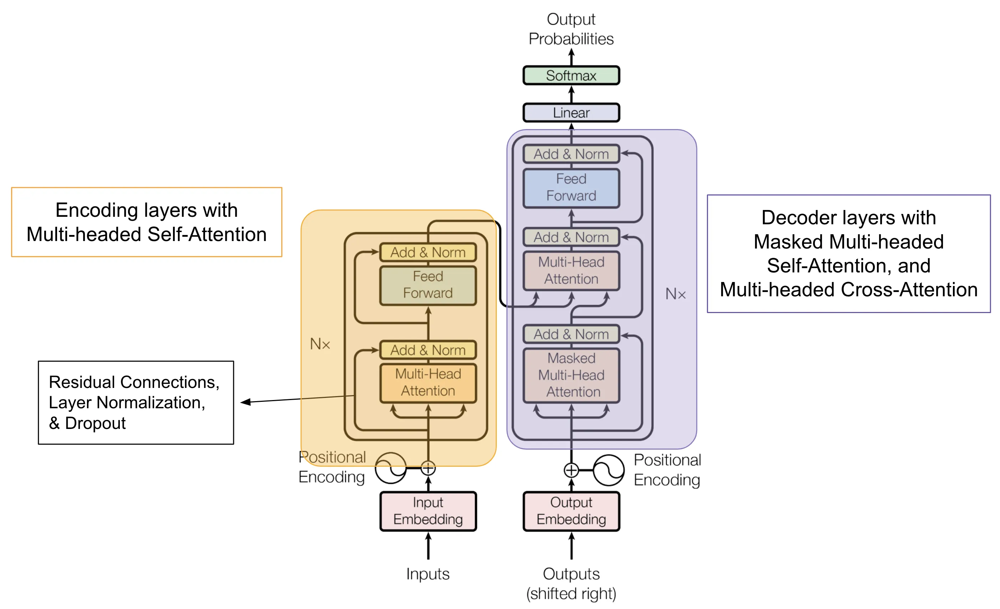
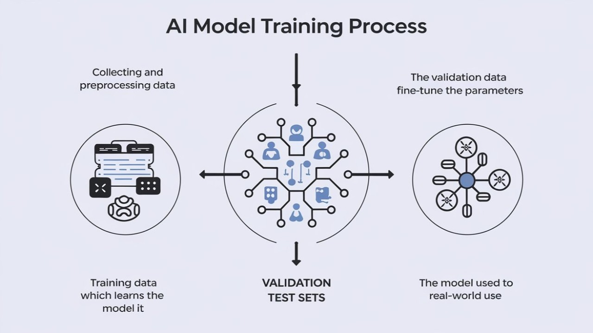

The Great AI Illusion
Artificial Intelligence feels like magic. You ask ChatGPT a question, and it responds with human-like intelligence. You show DALL-E a text prompt, and it creates art. But here’s the uncomfortable truth: there’s no actual intelligence happening here.
What we call “AI” is really an incredibly sophisticated pattern matching system—one that’s so good at finding and reproducing patterns that it can fool us into thinking it understands. Today, we’re going to pull back the curtain and examine exactly how these systems work.
 AI neural networks mimic brain structure but work very differently under the hood
AI neural networks mimic brain structure but work very differently under the hood
Key Question: If AI doesn’t truly “think,” why does it seem so smart?
The Mathematical Foundation: It’s All About Prediction
At its core, every AI system is trying to solve one fundamental problem: given some input, predict the most likely output. Whether it’s predicting the next word in a sentence, the next pixel in an image, or the next move in a game, AI is fundamentally a prediction engine.
The Architecture of Modern AI
Modern AI systems, particularly large language models like GPT-4 or Claude, are built on an architecture called transformers. Here’s how they work:
# Simplified transformer logic
def transformer_prediction(input_text):
tokens = tokenize(input_text) # Break text into pieces
embeddings = convert_to_vectors(tokens) # Convert to numbers
for layer in neural_layers:
embeddings = attention_mechanism(embeddings) # Find relationships
embeddings = feed_forward(embeddings) # Process patterns
return predict_next_token(embeddings) # Guess what comes next The transformer architecture that powers modern AI - layers of attention and processing
The scale of modern AI is staggering. GPT-3 has 175 billion parameters and was trained on 45TB of text data at a cost of around $4.6 million. GPT-4 is estimated to have over 1 trillion parameters with training costs exceeding $60 million.
The Attention Mechanism: How AI “Focuses”
The breakthrough that made modern AI possible was the attention mechanism. This allows models to selectively focus on different parts of their input when making predictions.
Think of attention like a spotlight that can illuminate different parts of a sentence based on context:
Example: “The cat sat on the mat because it was comfortable.”
When predicting what “it” refers to, the attention mechanism looks at: - “cat” (high attention - 0.7) - “mat” (medium attention - 0.2) - “sat” (low attention - 0.1)
This attention mechanism allows AI to understand relationships between words that are far apart in a sentence, enabling more sophisticated language understanding.
The Training Process: Teaching Patterns at Scale
Understanding how AI systems learn is crucial to understanding their capabilities and limitations. The training process happens in distinct phases:
 The complete pipeline from raw data to deployed AI system
Phase 1: Pre-training (Learning the World)
Imagine you had to read the entire internet and predict what comes next in every sentence. That’s essentially what happens during pre-training:
- Data Collection: Scrape massive amounts of text from websites, books, articles
- Tokenization: Break everything into small chunks (words, parts of words, punctuation)
- Prediction Training: For every sequence, hide the last word and train the model to predict it
- Repeat Trillions of Times: Adjust internal parameters based on prediction accuracy
# Simplified training loop
for epoch in range(many_epochs):
for text_chunk in massive_dataset:
input_tokens = text_chunk[:-1] # All but last token
target_token = text_chunk[-1] # The token to predict
prediction = model(input_tokens)
loss = calculate_error(prediction, target_token)
# Adjust model weights to reduce error
model.update_weights(loss.gradient())Phase 2: Fine-tuning (Learning to be Helpful)
Raw pre-training creates a model that can continue any text, but it doesn’t necessarily produce helpful responses. Fine-tuning shapes the model’s behavior:
- Supervised Fine-tuning: Train on high-quality question-answer pairs
- Reinforcement Learning from Human Feedback (RLHF): Use human preferences to reward good responses
- Constitutional AI: Train the model to follow principles and avoid harmful outputs
This is why ChatGPT feels helpful and conversational, while a raw language model might just continue your sentence in unexpected ways.
Emergent Abilities: When Simple Rules Create Complex Behavior
One of the most fascinating aspects of large AI models is emergence—complex capabilities that weren’t explicitly programmed but arise from the interaction of simple components at scale.
Examples of Emergent Abilities
As models get larger, they suddenly develop new capabilities:
Chain-of-Thought Reasoning: Models learn to “think step by step” without being explicitly taught this strategy.
In-Context Learning: Models can learn new tasks from just a few examples in the prompt, without any additional training.
# Example of in-context learning
prompt = """
Translate English to French:
Hello → Bonjour
Goodbye → Au revoir
Thank you → Merci
Good morning →
"""
# Model predicts "Bonjour" despite never being
# explicitly trained on this translation taskCross-Lingual Transfer: Models trained primarily on English can perform well in other languages.
Scientists still don’t fully understand why emergence happens. Leading theories include phase transitions (like water becoming ice), increased representational capacity, and “grokking”—when models suddenly understand patterns after seeing enough examples.
The Fundamental Limitations: What AI Can’t Do
Despite their impressive capabilities, current AI systems have fundamental limitations that stem from their architecture:
Understanding what AI can and cannot reliably do
1. No True Understanding
AI systems manipulate symbols without understanding their meaning. They’re like a person who can perfectly reproduce Chinese characters without speaking Chinese.
Example: An AI can tell you that “water boils at 100°C” but doesn’t understand what boiling actually is—the molecular motion, the phase change, the physical reality behind the words.
2. Hallucination and Confabulation
Because AI systems are trained to always produce output, they’ll generate plausible-sounding but false information when they don’t know something.
# What happens inside when AI doesn't know
def generate_response(query):
if confidence_score > threshold:
return known_information(query)
else:
# Problem: AI still tries to respond!
return generate_plausible_sounding_answer(query)3. Training Data Cutoff
AI models are frozen in time at their training cutoff. They can’t learn new information or update their knowledge without retraining.
4. Context Window Limitations
Current models can only “remember” a limited amount of recent conversation (typically 4,000-128,000 tokens). They have no long-term episodic memory.
5. Lack of Causal Understanding
AI systems excel at finding correlations but struggle with causation. They might notice that umbrella sales correlate with rain but don’t understand that rain causes people to buy umbrellas.
What This Means for Society
Understanding how AI really works has profound implications for how we should think about and use these systems:
The Good News
- Powerful Tools: AI systems are incredibly useful for pattern recognition, content generation, and automation
- Democratization: Complex capabilities are becoming accessible to everyone
- Augmentation: AI can enhance human capabilities rather than replace human judgment
The Concerning News
- Overconfidence: AI systems present uncertain information with false confidence
- Bias Amplification: Training on internet data amplifies existing societal biases
- Misinformation: Sophisticated text generation can create convincing but false content
Best Practices for AI Use
- Verify Important Information: Always fact-check AI outputs for critical decisions
- Understand Limitations: Know what AI can and cannot do reliably
- Maintain Human Oversight: Keep humans in the loop for important judgments
- Recognize Bias: Be aware that AI systems reflect training data biases
- Use as a Tool: Treat AI as a sophisticated calculator, not an oracle
The Future: What’s Next?
Current AI represents just the beginning. Several developments on the horizon could dramatically change the landscape:
Near-Term Developments (1-3 years)
- Multimodal Integration: AI that seamlessly combines text, images, audio, and video
- Longer Context Windows: Models that can “remember” entire books or conversations
- Better Reasoning: Improved step-by-step problem-solving capabilities
- Specialized Models: AI systems optimized for specific domains (medicine, law, science)
Long-Term Questions (10+ years)
- Artificial General Intelligence (AGI): AI that matches human cognitive abilities across all domains
- Consciousness: Whether AI systems can develop subjective experiences
- Alignment: Ensuring advanced AI systems remain beneficial to humanity
The Research Frontiers
Scientists are actively working on fundamental questions:
- Scaling Laws: How do capabilities change with model size, data, and compute?
- Emergence: Why do new abilities suddenly appear at certain scales?
- Alignment: How do we ensure AI systems do what we want them to do?
- Interpretability: Can we understand what’s happening inside these black boxes?
Conclusion: Intelligence vs. Sophistication
After peeling back the layers, we can see that current AI systems are incredibly sophisticated pattern-matching engines rather than truly intelligent entities. They don’t understand the world in the way humans do—they manipulate symbols based on statistical relationships learned from vast amounts of data.
But here’s the remarkable thing: this statistical approach is powerful enough to seem intelligent. By processing patterns at unprecedented scale, these systems can engage in conversations, solve problems, and create content that feels genuinely intelligent.
The Paradox of AI
The central paradox of modern AI is that it achieves intelligence-like behavior without intelligence-like understanding. This has profound implications:
- For Users: We must learn to work with these systems’ strengths while compensating for their weaknesses
- For Society: We need new frameworks for thinking about machine capabilities and limitations
- For the Future: We must grapple with questions about consciousness, agency, and what it means to be intelligent
Understanding how AI really works doesn’t diminish its impressiveness—if anything, it makes the achievement more remarkable. The fact that statistical pattern matching at scale can produce such sophisticated behavior suggests that intelligence itself might be more about information processing patterns than we previously thought.
As these systems become more powerful and ubiquitous, our understanding of their true nature becomes increasingly important. The more we know about how AI works, the better we can harness its benefits while avoiding its pitfalls.
The AI revolution is just beginning, and we’re all learning to navigate this new landscape together. By understanding the reality behind the magic, we can make better decisions about how to integrate these powerful tools into our lives and society.
What do you think? Does understanding the mechanics behind AI change how you view these systems? Let me know your thoughts.